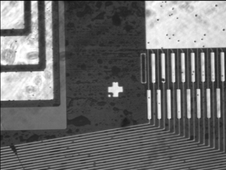
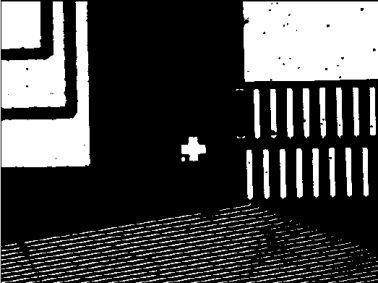
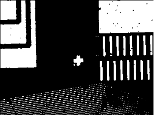

Công cụ Nhị phân hóa
Chức năng
Nhị phân hóa là một trong những phương pháp tiền xử lý ảnh phổ biến. Bản chất của công cụ nhị phân hóa là phân đoạn mức xám của hình ảnh, từ đó chuyển đổi ảnh xám thành ảnh nhị phân. Hình minh họa được thể hiện trong Hình 1.
 
(a) Ảnh đầu vào (b) Ảnh kết quả
Hình 1 Minh họa nhị phân hóa
Tham số
| Phân loại |
Tên tham số |
Mô tả tham số |
| Cửa sổ thuộc tính |
Có sử dụng ROI hay không |
Chọn “Có” để hiển thị vùng ROI trong cửa sổ Edit, dùng để chỉ định vùng ảnh cần nhị phân hóa; chọn “Không” thì toàn bộ ảnh sẽ được nhị phân hóa. Mặc định là Không. |
|
Vùng ROI |
Vùng ảnh được nhị phân hóa: toàn ảnh, hình chữ nhật, hình chữ nhật biến dạng (affine), ROI đa giác, ROI vành khuyên, ROI hình tròn, ROI vành khuyên (đoạn), bật mặt nạ. |
|
Chế độ nhị phân hóa |
Công cụ nhị phân hóa cung cấp 2 chế độ: Chế độ ngưỡng tự động và Chế độ ngưỡng thủ công. Chọn ngưỡng tự động thì hiển thị các tham số tương ứng, chọn ngưỡng thủ công thì hiển thị tham số thủ công. |
|
Phương pháp ngưỡng tự động |
Phương pháp ngưỡng tự động sử dụng thuật toán ngưỡng tự động, bao gồm phương pháp lặp và phương pháp phương sai giữa các lớp lớn nhất. Chỉ khả dụng khi chế độ nhị phân hóa được chọn là ngưỡng tự động. |
|
Ngưỡng thủ công |
Sử dụng giá trị ngưỡng thủ công để phân đoạn ảnh: các pixel có giá trị xám nhỏ hơn ngưỡng được đặt thành 0, lớn hơn ngưỡng được đặt thành 255. Chỉ có hiệu lực khi chọn chế độ nhị phân hóa là thủ công. Phạm vi 0–255. |
| Cửa sổ hình ảnh |
Ảnh đầu vào |
Hiển thị ảnh cần được nhị phân hóa. |
| Chuỗi dữ liệu |
Ảnh đầu vào |
Ảnh cần nhị phân hóa. |
|
Biến đổi tuyến tính 2D |
Phép biến đổi tịnh tiến, xoay, phóng to/thu nhỏ của đối tượng so với mẫu. |
| Giao diện nâng cao |
Không |
Không có |
Đầu ra
| Phân loại |
Tên tham số |
Mô tả tham số |
| Cửa sổ giám sát |
Ảnh đầu vào |
Xuất các thông tin về chiều rộng, chiều cao và kích thước pixel của ảnh. |
|
Ảnh đầu ra |
Xuất các thông tin về chiều rộng, chiều cao và kích thước pixel của ảnh. |
|
Kết quả thực thi |
Kết quả thực thi của công cụ. |
|
Thời gian thực thi |
Thời gian thực thi công cụ. |
| Cửa sổ hình ảnh |
Ảnh đầu ra |
Hiển thị ảnh kết quả sau khi công cụ thực thi. |
|
Kết quả thực thi |
Hiển thị kết quả thực thi của công cụ, “OK” nếu thành công, “NG” nếu thất bại. Tương tự như tham số kết quả thực thi trong cửa sổ giám sát. |
| Chuỗi dữ liệu |
Ảnh đầu ra |
Xuất thông tin ảnh đầu ra (chiều rộng, chiều cao, kích thước pixel) để sử dụng cho các công cụ tiếp theo. Tương tự cửa sổ giám sát. |
Giải thích chi tiết
Phương pháp ngưỡng tự động
Phương pháp lặp
Dựa trên tư tưởng xấp xỉ: đầu tiên dựa vào phân bố mức xám của ảnh để chọn một giá trị ngưỡng gần đúng làm ngưỡng ban đầu, sau đó lặp lại quá trình phân đoạn và cập nhật ngưỡng cho đến khi đạt được ngưỡng tối ưu được công nhận.
Phương pháp phương sai giữa các lớp lớn nhất
Dựa trên đặc tính mức xám của ảnh, chia ảnh thành hai phần: tiền cảnh và hậu cảnh. Phương sai giữa hai lớp càng lớn thì sự khác biệt giữa hai phần càng rõ. Nếu một phần tiền cảnh bị phân nhầm sang hậu cảnh (hoặc ngược lại), sự khác biệt sẽ giảm. Do đó, chia ảnh sao cho phương sai giữa các lớp lớn nhất tức là giảm thiểu xác suất phân nhầm.

(a) Phương pháp lặp (b) Phương pháp phương sai giữa các lớp lớn nhất
© Ngưỡng thủ công 120 (d) Ngưỡng thủ công 140
Hình 2 Ngưỡng tự động và ngưỡng thủ công
Lưu ý
Không có
Dự án mẫu
参见“\Samples\二值化工具.gvp”。